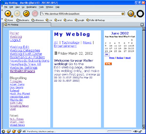
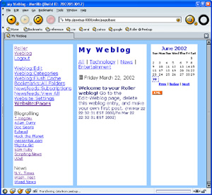

{kind=link}
{kind=link}
{kind=link}

Version 0.9.5 User's Guide
Copyright © 2002 David M Johnson
Updated: August 28, 2002
( new or previously undocumented features are shown in red )
Roller is a Weblogger. Roller makes it easy for you to maintain a weblog, even if you are have little or no knowledge of HTML. All you have to do is go to a web site that is running the Roller software, sign up for an account and bam you have a weblog. You can start posting right away. You will need to know a little about HTML if you want to kick it up a notch by customizing the layout of your Weblog and adding new pages to your Weblog website. More on that later.
Please note that Roller is currently beta quality code – not necessarily ready for prime time – there are probably a number of design flaws and an even larger number of bugs. As always with software of all sorts, and especially pre-release software such as this, use at your own risk.
Signing up for a new account
To sign-up for a Roller account, go the the main Roller
page and click on the link that reads “register as a new user.”
Enter your login name, your real name, your desired password, your e-mail
address, and pick one of the predefined Weblog themes provided by Roller.
There is a basic theme, which is a very good starting point for those who
wish to build their own themes. And, there are three themes adapted from
themes on blogskins.com: these are
shown below. There is also a new XHTML/CSS based theme
called x2 that was contributed by Matt Raible.
|
|
|
|
|
basic  |
After your account is created you will be returned to the main Roller page. You will see that your name has been added to the list of Roller users displayed on the main page. If you click on your name in this list, you will be taken to your Weblog page.
Your initial website
Your initial website will include just one webpage that is visible to your readers and that is named “Weblog.” This page will include a navigation bar, a weblog category chooser, a weblog calendar, some links and a weblog area where your posts will appear. The screenshot below shows what your page will look like if you chose the Roller basic theme:
Figure 1: your initial Weblog page, assuming you chose the basic theme
Logging in
From your Weblog page or from the main Roller page, click the Login link. Enter your username and password, click submit, and you will be taken to your Weblob page again. But this time, you will see some new Links on the page: Weblog:Edit, Weblog:Categories, Weblog:Flush-Cache, Bookmarks, Newsfeeds, and Website. These links lead you to pages for editing your Weblog, categories, bookmarks (AKA links), newsfeeds, and the actual pages that make up your website. First, lets talk about how to edit your Weblog.
Adding a new entry
Editing your Weblog means adding new Weblog entries to be enjoyed by your readers and editing older Weblog entries to correct mistakes, clarify points, or to censor those drunken ramblings you entered last night.
To add a new Weblog entry you simply go
to the Edit-Weblog page, enter an optional title, enter the Weblog
entry, choose a Weblog category. and hit the Submit button. As soon
as you do that, your Weblog entry is posted to your Weblog for the world
to see.
Generally, you will not need to use the Flush
Cache link on the Weblog:Edit page, unless you are using SQL to muck about
in the Roller database and you want to force the cache to reset itself. Normally,
as you edit weblog entries, bookmarks, and other things Roller should automatically
reset it's cache as needed.
Figure
2: the Edit-Weblog page
Editing an old entry
You can edit or remove an old Weblog entry
by clicking on the Edit or Remove links in the Recent Weblog Entries
part of the page. If the Weblog entry that you want to edit is not
so recent and is not shown in the Recent Weblog Entries list, then you
can use the Weblog Entry Archive calendar to find that old entry.
You can use any Blogger API client to post and edit Roller weblog entries. Before you can do this, you must go to the Roller Website:Settings menu and check the box that reads Enable Blogger API for your weblog. You should also pick a category for posts made through the Blogger API. Be aware that one shortcoming of Blogger API based blogging clients titles. The Blogger API does not support weblog entry titles.
Once you have enabled Blogger API support
for your weblog, you can use any Blogger API client to post and edit your
Roller weblog. For example, you could use the w:bloggarclient. Below is a screenshot of
the w:bloggar client. As you can see, you need to configure w:bloggar by
entering your host name, port number, and the path /roller/xmlrpc into the
w:bloggar Account Connection dialog-box. You also need to enter your Roller
username and password in to the w:bloggar login dialog.
Editing your bookmark collection
Adding new bookmark folders
You probably already have a web bookmark collection stored in your web browser, so why do you need to enter bookmarks into Roller. Well, most Weblog authors like to include links to their favorite websites and to their favorite Weblogs right on their Weblog page. Roller's bookmark feature makes it easy for you to do this too.
Bookmarks are organized in to named folders. You can define any number of folders and each of these folders can hold any number of bookmarks. There is only one level of folders, so you cannot have a folder that contains other folders.
Your initial website contains two bookmark folders: one named “Blogrolling” that contains Weblogging related links and one named “News” that contains links to well known news sources. If you look at Figure 1 again, you can see that these two folder are displayed on the left side of the Weblog page. You can use Roller's bookmark management features to rename these folders if you wish, or you can delete them add add folders of your own choosing.
Figure
3: the Edit-Bookmark Folders page
Adding bookmarks to folders
Once you have defined one or more bookmark folders, you can start adding bookmarks to those folders. From the Edit-Bookmark Folders page, click the Edit link for the Folder you wish to edit. You will be taken to the Edit-Bookmark Folder page for that folder. From there you can edit the name of the folder and you can add and remove bookmarks in that folder.
Figure 4: the Edit-Bookmark Folder page
Editing a bookmark
After you use the Edit-Bookmark Folder to add a bookmark, you can edit the Bookmark itself. To edit a bookmark, click on the Edit link in the Edit-Bookmark Folder page. That will take you to the Edit-Bookmark page and from there you can change the name, description and display priority of the bookmark you have chosen to edit. You can also move the bookmark to another folder by changing the Bookmark Folder combo-box.
Figure
5: the Edit-Bookmark page
Editing your newsfeed collection
Adding and deleting newsfeeds
A newsfeed is a list of news stories and a short desciption of each story that is automically retrieved from some remote website. Newsfeeds are delivered in a format known as Really Simple Syndication or Rich Site Summary or just RSS.
Roller allows you to include newsfeeds on your Weblog page or on a separate page that you create as part of your Weblog's website. Your initial website will include three newsfeeds, but none of these newsfeeds are displayed on your Weblog page. You can use one of the macros that we will discuss later to display your newsfeeds.
Before you include a newsfeed on your website, you should probaby make sure that doing so is OK with the provider of the newsfeed. Some providers might frown upon this and by frown I mean that they might sick a pack of rabid lawyers on your ass. Anyhow, use your own judgement here – I am not a lawyer and I am not responsible for any of your current or future legal troubles.
To add a newsfeed you need a URL to the providers RSS feed. This URL usually ends with the letters “.xml”. Enter the name that you would like to use for the newsfeed, enter the URL and hit enter to add the newsfeed.
Page templates and macros
Your Weblog page is defined by a page template. A template is a file with some special “macros” that indicate where Roller is supposed to put your Weblog, Weblog Calendar, and other dynamically created content. A templage can be an HTML file, an HTML fragment, a CSS page, or just about anything else you can enter into Roller as text.
You initial Roller website has three page template, only one of which is visible to users. The pages are named Weblog, _DayTemplate and _css.
The Weblog page is the visible page, it is the HTML template that defines your Weblog. It is a mix of HTML and Roller macros that render the dynamic parts of the page like the Weblog Calendar and the actual Weblog entries.
The _DayTemplate page is the HTML template that defines the entries for each day are formatted in your Weblog page. This is essentially an HTML fragment with some Roller macros for rendering the day's Weblog entries, title, date, and other items.
The _css page is a CSS style-sheet information that is included (using a macro) on your Weblog page.
You can define as many pages as you would like. You must specify which page is to be your Default Page, that is, the page that your readers first see when they visit your website. You must also specify which page is your Weblog day template.
Note that any page whose name begins with the underbar “_” character will not be visible to your readers. That is why the _DayTemplate and _css pages start with underbars, they are used internally and are not meant for public consumption.
Figure 6: the Edit-Website page
If you click on one of the Current Pages in the Edit-Website page, you will be directed to the Edit-Page page so that you can edit that page. You can put anything on a page, but typically you will put HTML with some Roller macros mixed in. Next you will read about the various Roller macros that are available for your use.
The screenshot below shows the Weblog page being edited in the Edit-Page page.
Figure 7: the Edit-Page page
Macros intended for use on any page template
Macros tell Roller where to place the dynamic parts of your web pages. Macros are actually Velocity expressions. For more information on Velocity, visit the Velocity web site and read the Velocity User's Guide. Note that I use the term macro loosely, but it does have a specific meaning in Velocity. What I call a macro is really a Velocity expression.
$macros.EditorNavBar( booean ) - show your website's editor navigation bar: a list of links to each of the Edit pages that you can use to edit your website. The macro takes one boolean (true or false) argument. If you enter true, then the navbar will be drawn vertically. If you enter false, then the navbar will be drawn horizontally.
$macros.showNavBar( boolean ) - show your website's navigation bar: a list of links to each of the visible pages in your weblog. The macro takes one boolean (true or false) argument. If you enter true, then the navbar will be drawn vertically. If you enter false, then the navbar will be drawn horizontally.
$macros.showNewsfeed( string ) - displays the newsfeed specified by name.
$macros.showAllNewsfeeds() - displays all newsfeeds that you have defined. Warning: if you have defined a lot of newsfeeds this can be very slow.
$macros.showWeblogCategoryChooser( boolean ) - show the Weblog Category chooser: a list of links to the different categories of posts in your Weblog. The boolean argument determines if the chooser should be drawn horizontally or vertcally.
$macros.showWeblogEntries() - show the most recent entries in your Weblog.
$macros.showWeblogCalendar() - show your Weblog Calendar: a calendar with links to your previous Weblog entries.
$macros.includePage( string ) - includes the content of another page template, specified by name.
$macros.showResourcePath() - show path to your resources directory so that you can create URLs to images and other files that you uploaded to Roller.
$macros.showThemePath( string ) - shows base URL for reaching theme resources in the theme specified.
$macros.showRSSBadge() - shows an XML icon that links to an RSS representation of your most recent Weblog entries.
$macros.showThemeImage( string, string ) - shows image tag for specified theme and image.
arg1 - theme name
arg2 - image name
$macros.showThemeImagePath( string, string ) - shows path to image specified by theme and name.
arg1 - theme name
arg2 - image name
$macros.showThemeScript( string, string ) - shows Javascript tag for specified theme and script name.
arg1 - theme name
arg2 - script name
$macros.showThemeScriptPath( string, string ) - shows URL path to Javascript script in specified theme.
arg1 - theme name
arg2 - script name
$macros.showThemeStyle( string, string, boolean ) - includes CSS script in page
arg1 - stylesheet name
arg2 - script name
arg3 - true to import the CSS file instead of including it in the page
$macros.showThemeStyleImport( string, string ) - imports CSS in page.
arg1 - stylesheet name
arg2 - script name
$macros.showThemeStylePath( string, string ) - shows URL path to stylesheet in specified theme.
$macros.showVersion() - shows Roller version number
$macros.showWebsiteTitle() - shows website title specified on Weblog:Settings page
$macros.showWebsiteDescription() - shows website description specified on Weblog:Settings page.
Macros intended for use on your day template page
Your Day Template page determines how each day of Weblog entries is formatted on the page by the $macros.showWeblogEntries() macro. See the
$macros.showDayPermalink() - shows an icon that provides a permanent link to this day in your Weblog.
$macros.showEntryPermalink( $entry ) - shows a hashmark (#) that provides a permanent link to this entry in your Weblog.
$macros.showEntryDate() - shows the day's date.
$entries - this Velocity expression is a collection of Weblog entry objects for this day. Each entry has the following properties:
$entry.title - title of the Weblog entry
$entry.text - the text of the Weblog entry
$entry.updateTime - the time of last update for the Weblog entry
$entry.pubDate - the original publish time for the Weblog entry
Examples
Here is the weblog page template for the basic theme, shown in figure 1 (macros are shown in blue):
<!DOCTYPE html PUBLIC "-//W3C//DTD HTML 4.01 Transitional//EN">
<html><head>
<title>$macros.showWebsiteTitle()</title>
<style type="text/css">$macros.includePage("_css")
</style>
</head>
<body background="/roller/images/bg-greylines.gif">
<table cellpadding="5" cellspacing="15" border="0" align="center" width="95%">
<tr>
<td width="20%" valign="top" bgcolor="#ffffff">
$macros.showNavBar(true)<br>
$macros.showEditorNavBar(true)<br>
$macros.showBookmarks("Blogrolling",true)<br>
$macros.showBookmarks("News",true)
</td>
<td width="60%" valign="top" bgcolor="#ffffff">
<h2>$macros.showWebsiteTitle()</h2>
$macros.showWeblogCategoryChooser()<br>
$macros.showWeblogEntries()
</td>
<td valign="top" bgcolor="#ffffff" width="20%">
$macros.showWeblogCalendar()<br>
$macros.showRSSBadge()
</td>
</tr>
</table>
</body></html>
Here is the Day Template for the Weblog shown in figure 1:
<table width="95%">
<tr>
<td>
$macros.showPermalink()
$macros.showEntryDate()
</td>
</tr>
</table>
#foreach( $entry in $entries )
<p>
<b>$entry.title</b> $entry.text
<font size="2">($entry.updateTime/$entry.pubTime)</font>
</p>
#end
{kind=link}
{kind=link}
{kind=link}
{kind=link}
{kind=link}
{kind=link}
{kind=link}